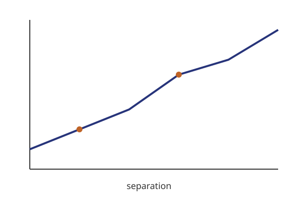

A deck you can edit.
reveal.js slides, edited like a canvas
Calum Murray · CEA Paris-Saclay
Somewhere · Someday
Introduction
Three things to remember.
- Double-click any text to edit it in place
- Drag objects; guides snap to the slide and to each other
- Fragments are shown while editing
A citation line, absolutely positioned by the theme.
Layout
Two columns, one figure.
- Left column text
- with emphasis

Figure 1 — a line going up.
Free objects on a dark slide.
A free text box next to a shape.
Math
An equation, typeset by KaTeX.
\[ \xi_{g+}(r_p) = \frac{S_+D - S_+R}{RR} \]
Inline math like $\gamma_{\rm IA}$ stays LaTeX in the file.
Vertical 1
The first of two stacked slides.
Vertical 2
The second one.